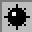

How to Play
Introduction
-
The goal of minesweeper is to uncover the hidden mines in a given grid. When you first click, you reveal the clicked position's status: It could have a mine or not.
-
You are first given a 15 x 15 grid, with 10 mines.
How to play:
-
Click to reveal more to squares, and the squares in with indicated numbers show how many mines are adjacent to that square.
-
Right clicking a square allows you to flag it, indicating that you think it is a mine
-
This helps keep track of the location of mines.
-
Right clicking again turns it to a question mark, marking that you are not sure.
-
Right clicking again restores to an unrevealed square.
Changing settings:
-
Use the menu to start with a new game, or edit the number of mines or the grid size of the game
-
The timer shows how many times has elapsed, and the number of mines show how many predicted mines are remaining (not flagged)
Legend:
 - A mine
 - A flag
- A flag
- A question mark